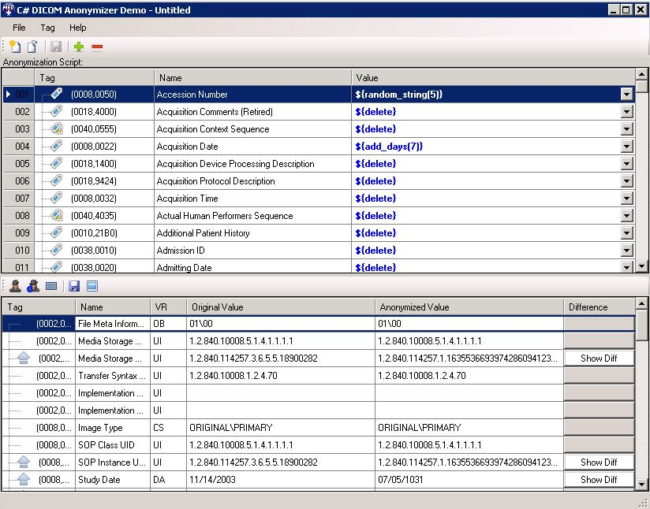

Dicom Anonymizer Demo
Demonstrates the DICOM Anonymizer functionality.
Anonymize any DICOM Dataset
Editor shows differences between original an anonymized values
Can create, save, and load scripts to customized the anonymization process
